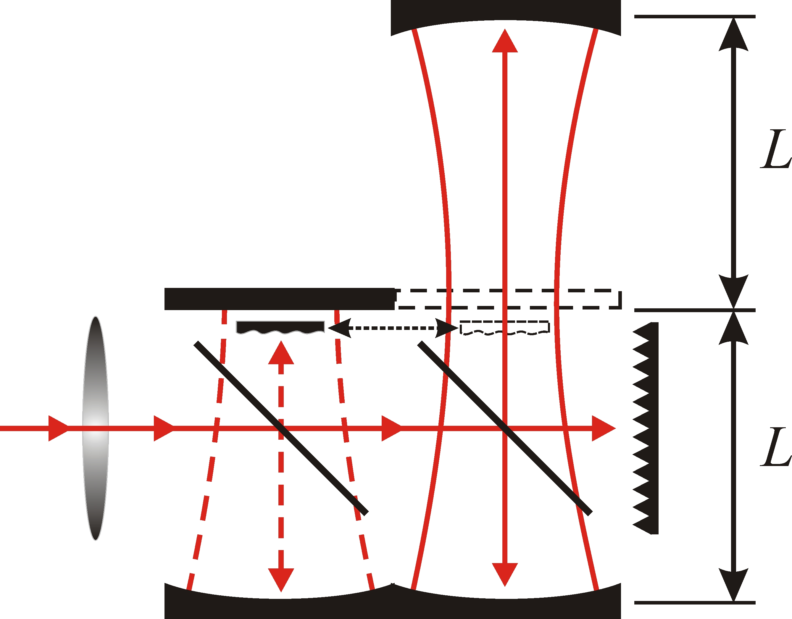

Instruments Resonator spectrometer
Water related continuum study Resonator spectrometer
Water related continuum study
Water related continuum study
The water-related continuum absorption measurements posed one important problem which was mentioned by many authors but was not resolved.
It consists of distinguishing between absorption in water vapor and absorption in water adsorbed by elements of the spectrometer cavity,
which produces a false absorption signal. Solution of this problem was found by varying the optical-path length of a gas cell, keeping all the
rest radiation absorption conditions maximally the same [Ref.11 (2000)]. This method was realized in the double-cavity scheme of the resonator spectrometer,
in which the lengths of the two resonators differ exactly by a factor of two, but the parameters of the mirrors, field structure, and coupling
elements are kept the same in both resonators (see Fig. 1).

Fig. 1
Experiments show that the contribution of adsorbed water to the total measured absorption can be very significant. Fig. 2 presents
results of the measurements of the temperature dependence of the self-continuum parameters by the conventional single-cavity method (using resonator
lengths 0.35 and 0.7 m) and by the double-cavity (length-variation) method. The "true" absorption measured by the double-cavity method in
low-temperature region is several times less than absorption measured by the single-cavity method. This difference shows order of magnitude of the
possible errors arising from neglecting the absorption by adsorbed water.
Now with introduction of the double-cavity method one can obtain "true" gas absorption values needed for proper accounting of the continuum absorption
even for low temperature region typical for the most part of atmosphere. Results of such most reliable measurements of the temperature dependencies of
the measured self- and foreign-continuum parameters are presented in Fig. 3. The measurements confirmed that quadratic with partial water vapor
pressure component of atmospheric continuum below-room temperatures is formed by the water dimer. See [Ref.
4 (2009)] and [Ref. 5 (2011)] for more details.
|